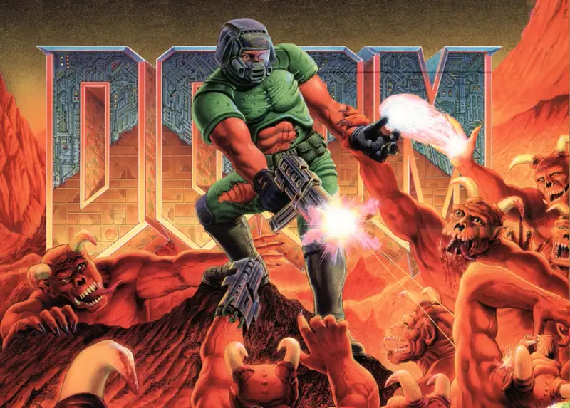

Doom
Description
A trailblazer that defined the first-person shooter genre, DOOM erupted onto the PC scene in 1993 with its fast-paced action, gritty atmosphere, and relentless demon-slaying mayhem. As a lone space marine stranded on Mars' moons, you'll blast through hordes of hellspawn using an iconic arsenal—from the trusty shotgun to the mighty BFG 9000. With its intense gameplay, influential level design, and unforgettable soundtrack, DOOM didn't just raise hell—it changed gaming forever.
Did you know?
At one point, Doom was installed on more PCs than Windows 95